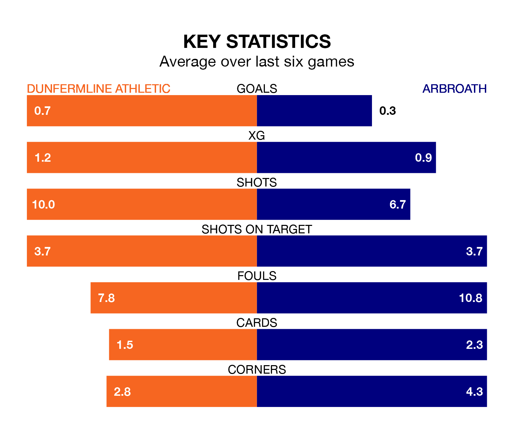

Saturday's match at KDM Group East End Park sees the league's two bottom sides face each other, as Dunfermline Athletic host rock-bottom Arbroath.
Dunfermline have picked up 24 points from their first 24 Championship games, with six wins and six draws.
That is six points more than Arbroath have collected, having won five and drawn three.
Dunfermline are in terrible form in the Championship, with no wins and two draws from their last six games.
And also with no wins and two draws over that period, Arbroath's form is identical – they have both taken two points from 18.
In the last 10 years, Dunfermline and Arbroath have played each other on 19 occasions. Dunfermline won 11 of them, Arbroath six, and they drew twice.
On average, Dunfermline scored 1.8 goals and Arbroath 1.2 in those matches.
Their last meeting was on December 23, when they played out a 1-1 draw.
With 23 goals in 22 games so far this season, the visitors are the league's second-lowest scorers with 1.0 goals per game. And they are conceding more than average, letting in 45 goals at a rate of 2.0 per game.
Athletic are also below average scorers, with 1.1 goals per game, compared to a league average of 1.4. They have conceded 1.5 goals per game.
Dunfermline's last match was on February 10, a 3-0 loss against Queen's Park.
Arbroath lost 3-0 against Greenock Morton last time out, on January 27.
Updated: 13:30 (UTC), 12/02/24